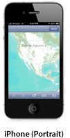
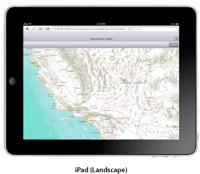
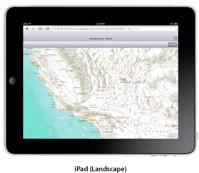

Hide Table of Contents
Hide Table of Contents
This tutorial demonstrates creating a mobile friendly webapp in a responsive mobile specific layout widget. In it you will learn about:
- Supported Devices and Orientations
- Using Mobile Web App Meta Tags
- The Compact Build of the ArcGIS Javascript API
- Intializing the App
- Handling Changes in Device Orientation
- Creating the Map
- Resources
The following tutorial uses the compact build of the ArcGIS API for JavaScript to build an application that displays a basemap from ArcGIS.com.
Supported Devices and Orientations
This template targets iOS and Android phones and tablets in both portrait and landscape orientations. It uses the Dojo Mobile framework and includes the Dojo Heading widget.


 

Using Mobile Web App Meta Tags
The meta tag properties
viewport,apple-mobile-web-app-capable, andapple-mobile-web-app-status-bar-stylecontain several useful properties when building mobile friendly web applications.<!doctype html> <html> <head> <meta http-equiv="Content-Type" content="text/html; charset=utf-8"> <meta http-equiv="X-UA-Compatible" content="IE=edge"> <meta name="apple-mobile-web-app-capable" content="yes"> <meta name="apple-mobile-web-app-status-bar-style" content="black-translucent"> <meta name="viewport" content="width=device-width, initial-scale=1.0, maximum-scale=1.0, user-scalable=0">
Use the Compact Build of the ArcGIS API for JavaScript
The compact build contains only the essential parts of the API and does not include the desktop focused widgets & layouts. It is a better choice as a starting point for mobile development.
To begin working with the compact version of the API, add the following script and style sheet tags inside the
<head>element of your HTML page:<script src="http://js.arcgis.com/3.7compact/"></script> <link rel="stylesheet" href="http://js.arcgis.com/3.7/js/esri/css/esri.css" /> <!-- css used to customize the UI of the application --> <link rel="stylesheet" href="css/main.css" />
The
<script>tag uses the ArcGIS API for JavaScript from a Content Delivery Network(CDN) provided by Esri. When new versions of the API are released, upgrades are done by updating the version number in the URL to the API. The esri.css file is also required to use the API. For more info on esri.css, refer to the required CSS page.Initialize the App
First, we need to require the Map, mobile, and supporting classes into our application. Then we use the mobile parser to create the widgets from markup. Calling the parser directly is preferable to using the
parseOnLoad: truedojoConfig option, when using the mobile specific dijits. It is smaller than the default parser and tuned for loading the mobile dijits more quickly than the default parser. Finally, we ensure that the address bar is really hidden. The meta tags above alone aren't sufficient to hide the address bar on Android phones and the iPhone in portrait mode. The dojox.mobile utility function specifically handles various device differences and corner cases where a simplewindow.scrollTocall does not work.<script> require(["esri/map", "dojox/mobile", "dojox/mobile/parser", "esri/sniff", "dojox/mobile/deviceTheme", "dojo/dom", "dijit/registry", "dojo/on", "dojox/mobile/ToolBarButton", "dojox/mobile/View"], function(Map, mobile, parser, has, dTheme, dom, registry, on) { parser.parse(); mobile.hideAddressBar(); ... </script>Handle Changes in Device Orientation
The map
resize()andreposition()methods are useful for updating the size and position on the map. This tutorial uses Dojo's header widget. The header represents a navigation bar, which usually appears at the top of the viewport. Therefore, we need to use a few additional properties to adjust the map size when the device's orientation changes.We can use the
hasfunctions to determine the device's OS and device category. Eitherwindow.matchMediaormobile.getScreenSizecan be used to determine the device's current orientation (landscape or portrait). For this example, we use themobile.getScreenSizetechnique. The height of the header bar and any of the browser's own visible components are subtracted from the map size, such that the map always exactly fills the available space regardless of device or orientation.Special care and extra adjustments are required for iPhones. These adjustments are separated out into the
iphoneAdjustmentfunction. This function adjusts for the delayed address bar hiding and the ever-present bottom buttonbar in portrait mode. It also sets up additional single use event listeners to handle the true fullscreen toggling in landscape mode. Please refer to Apple's documentation for exact dimension of UI components.In iOS,
screen.availHeightgives the total edge to edge measurement of the screen, whereas,window.innerHeightgives the dimensions available in between the browser's native UI components. Therefore,screen.availHeight - window.innerHeightgives the height of the visible native browser UI.
// onorientationchange doesn't always fire in a timely manner in Android so check for both orientationchange and resize var resizeEvt = (window.onorientationchange !== undefined && !has('android')) ? "orientationchange" : "resize"; on(window, resizeEvt, resizeMap); function resizeMap() { mobile.hideAddressBar(); adjustMapHeight(); map.resize(); map.reposition(); } function adjustMapHeight() { var availHeight = mobile.getScreenSize().h - registry.byId('header').domNode.clientHeight - 1; if (has('iphone') || has('ipod')) { availHeight += iphoneAdjustment(); } dom.byId("map").style.height = availHeight + "px"; } function iphoneAdjustment() { var sz = mobile.getScreenSize(); if (sz.h > sz.w) { //portrait //Need to add address bar height back to map because it has not been hidden yet /* 44 = height of bottom safari button bar */ return screen.availHeight - window.innerHeight - 44; } else { //landscape //Need to react to full screen / bottom button bar visible toggles var _conn = on(window, 'resize', function() { _conn.remove(); resizeMap(); }); return 0; } }Create the Map
The
mapis created the same way regardless of the platform being targeted. To ensure that the map is properly sized when returning from any other "views", we also resize the map after transitioning back to the map.var map = new esri.Map("map", { basemap: "topo", center: [-118.696, 34.111], zoom: 7, slider: false }); map.on("load", mapLoadHandler); function mapLoadHandler(evt) { resizeMap(); registry.byId('mapView').on('AfterTransitionIn', resizeMap); }Resources